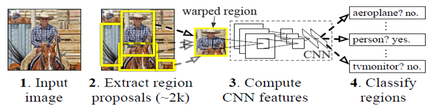
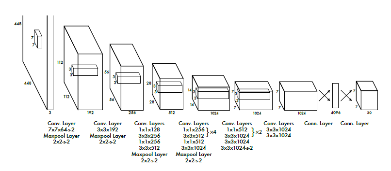
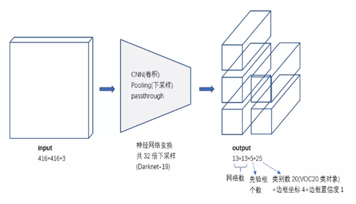
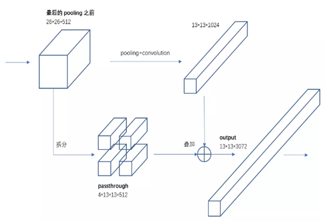
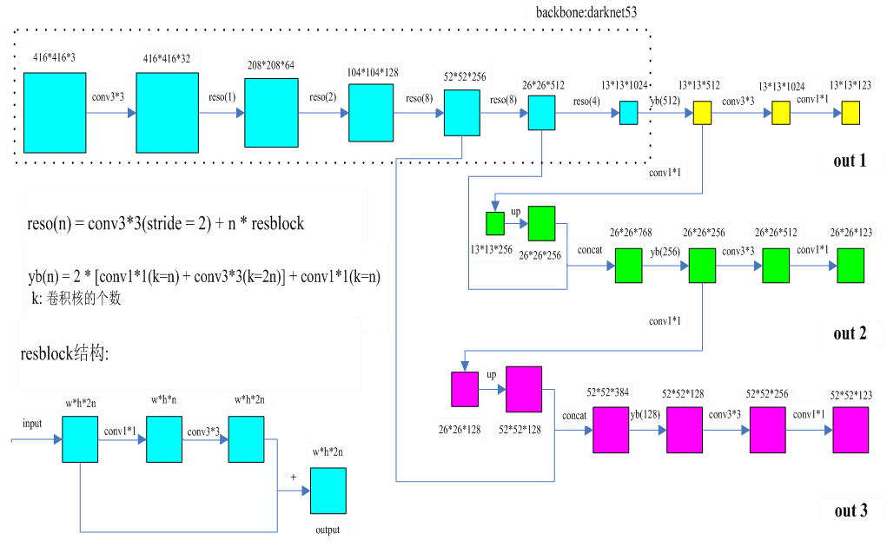
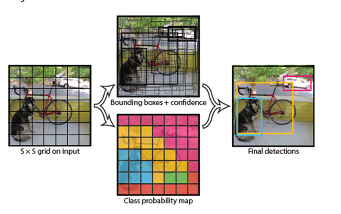
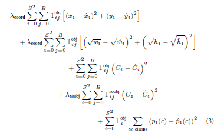
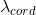

本文系作者原创，转载请注明出处:https://www.cnblogs.com/further-further-further/p/12072225.html
yolo是当前目标检测最顶级的算法之一，v1版本是2016年提出来的，v2是2017年提出来的，v3是2018年提出的。
官网地址：https://pjreddie.com/darknet/yolo/
说它最牛掰，有两点：
一是因为它采用深层卷积神经网络，吸收了当前很多经典卷积神经网络架构的优秀思想，在位置检测和对象的识别方面，
性能达到最优（准确率非常高的情况下还能达到实时检测）。
二是因为作者还将代码开源了。真心为作者这种大公无私的心胸点赞。
美中不足的是：作者虽然将代码开源，但是在论文介绍架构原理的时候比较模糊，特别是对一些重要改进，基本上是一笔带过。
现在在网络上有很多关于YOLO原理的讲解，个人感觉讲得不是很清楚，总感觉有点知其然而不知其所以然。比如：
yolo是在什么背景下出现的？
v1是在哪个经典网络架构上发展起来的？解决了什么问题？又存在什么问题？
v2针对v1的缺点做了哪些改进？改进后效果怎么样？又存在什么问题？
v3针对v2的缺点做了哪些改进？
这些问题不搞清楚，我觉得对yolo就谈不上真正的理解。废话不多说，下面就来介绍yolo的技术演进。
问题1：yolo v1是在什么背景下出现的？
yolo v1是在 R-CNN 基础上发展起来的。
R-CNN（region proposals + cnn），采用卷积神经网络进行目标检测的开山之作。

主要思想：对输入图片采用selective search 搜索查询算法，提取出大约 2000 个人眼感兴趣的候选边框，然后每个边框都通过一个独立的
卷积神经网络进行预测输出，后面再加上一个SVM（支持向量机）预测分类。
优点：位置检测与对象分类准确率非常高。
缺点：运算量大，检测速度非常慢，在 GPU 加持下一帧检测时间要 13s 左右，这在工程应用上是不可接受的。
造成速度慢的原因主要有 2 个：
> 用搜索查询算法提取 2000 个候选边框
> 每个候选边框都采用一个独立的CNN通道，这意味着卷积核的参数和全连接的参数都是不一样的，总的参数个数是非常恐怖的。
针对这个缺点，yolo v1做了哪些改进呢。

上面的图片是官网论文给出的结构图，但是个人感觉画得不太好，它容易让人误认为对输入图片进行网格化处理，每个网格化的小窗口是 7*7。
真实情况是，由最终输出是 7*7*30 大小代表的物理含义是：你可以把输入图片看成是经过了网格化（grid cell 7*7），每个网格化后的小窗口通过 CNN 预测出 1*30。
这里可能有点不好理解。总之一句话，在真正网络架构流程中，没有对输入图片进行任何网格化处理。
v1 改进点：
> Backbone: googLeNet22 （采用googLeNet22层卷积结构）
> 输入图片只处理一次（yolo名称的由来），通过多个卷积层提取不同的特征，每次卷积的时候共享卷积核参数。
输入图片只处理一次：表示输入图片只在第一次卷积的时候作为输入进行卷积运算，第一次卷积后的输出作为第二次卷积的输入，通过多个卷积层递进的方式来提取不同的特征。
并且这些特征通过的CNN通道都是相同的，从而可以共享卷积核参数。
> 每个 3*3 卷积核前面引入了 1*1 卷积核，作用有两个，一是提取更丰富的特征，二是减少卷积核的参数个数。
大家可能对减少卷积核参数个数的作用比较难以理解，这里举个例子。
比如输入图片大小是 56*56*256 最终转化的目标大小是 28*28*512。
直接卷积：56*56*256 & 3*3*256*512 -> 56*56*512 & pooling -> 28*28*512
卷积核参数：3*3*256*512 = 1179648
引入 1*1 卷积：56*56*256 & 1*1*256*128 -> 56*56*128 & 3*3*128*512 -> 56*56*512 & pooling -> 28*28*512
卷积核参数：1*1*256*128 + 3*3*128*512 = 622592
经过改进后，图片检测速度非常快，基本上可以达到实时。但是缺点是位置检测准确度低，并且不能检测出小对象物体。
针对 v1 的缺点，v2做了哪些改进呢？
v2 改进点：

> Backbone：darknet19 （采用darknet 19层卷积结构）
> 输入图片批归一化处理（BN），作用是降低不是重要特征的重要性。
这句话可能听得有点晕，举个例子，
你的样本里有两个特征列，一个特征列的数值在[1,10]范围内，另一个特征列的数值在[1000,10000]范围内，
但是真实情况是，你的这两个特征列重要性可能是一样的，只不过你拿到的数据就是这样的，我们知道，
卷积神经网络训练，实质就是一系列数值运算的过程，如果你将这两个特征列直接通过卷积神经网络进行训练，
那最终生成的模型准确率肯定是不高的，所以需要进行归一化处理，将数值归一化到[0,1]范围内，
从而是损失能量在收敛的时候更加平稳。
> 采用passthrough算法，解决池化信息丢失的问题，增加细粒度特征的检测（小对象）。

passthrough 算法主要是为了解决 pooling（池化）的缺点，不管是最大值池化，还是平均值池化，都有一个很明显的问题，
就是会造成信息丢失，passthrough 主要思想是在池化之前，将输入信息进行拆分，一拆为四，经过拆分后的大小就和池化后的输出大小相同，
然后叠加，叠加后的结果主要就是维度变化，这样就能解决池化会造成信息丢失的问题。
> 去掉全连接（FC），将输入图片拉伸（resize）到不同尺寸然后通过卷积神经网络，这样就得到了多尺寸的输出，从而能提升对不同大小对象的预测准确度。
全连接其实就是矩阵乘法运算，矩阵乘法有一个前提，矩阵 A 的列必须与矩阵 B 的行个数相同，否则是不能进行矩阵乘法运算的。
全连接的参数大小是固定的，那么你的输入大小自然就固定了，这样就无法实现多尺寸的输出，所以这里去掉了全连接层。
经过改进后，精度提升明显，特别是对小对象的检测，缺点是对小对象检测准确度不高。
针对 v2 的缺点，v3 又做了哪些改进呢？
v3 改进点：

上面是 v3 的结构图，是我跟踪代码，查找资料，绘制这张图真心不容易，正确性绝对有保证，大家如果觉得这张图对你理解 yolo 有帮助，麻烦点个赞。
输入大小这里是416*416，输出13*13，26*26,52*52，这里一般要求输入图片大小是 32 的倍数，因为整个卷积神经网络会将图片缩小32倍，16倍，8倍，
这里取最大公倍数32。 123 = 3*（边框坐标 4 + 置信度 1 + 类对象 36）。
> Backbone: darknet53 （采用darknet 53层卷积结构，实际是52层卷积，去掉了全连接层）
可以看出v3的卷积层数是v2的2.8倍，有个潜在的共识：增加模型准确率的一个直接做法是增加网络的深度和厚度，
（深度是指卷积层数，厚度指卷积核的维度或者是种类数），这里作用自然就是提升精度了。
> 用卷积取代池化
之前我们提到过池化的问题，会造成信息丢失，这里用卷积来实现池化的功能（使图片大小缩小2倍），同时不会造成信息的明显丢失。
> 采用残差网络（resnet）防止梯度消失
梯度消失或者梯度爆炸是在深层的卷积神经网络中才有可能出现的，梯度的计算是通过链式求导得到的，随着网络层的增加，链式求导项就会越来越长，
因为在每一层卷积后的输出都做了归一化处理，所以梯度只会越来越小，有可能为0，而0在后面模块运算中都为0，这样导致的直接后果是：
损失能量在收敛到某一阶段后就停止收敛，最后生成模型的精度自然就不高。而这里采用残差网络就能防止梯度消失，v3结构图里左下角就是残差网络的结构图。
残差网络的思想：每次卷积后的输出当做残差，将卷积前的输入与残差融合，作为整个输出，即使残差为0，整个输出也不会为0。
从残差网络结构图可以看出，每个3*3卷积核前都引入了1*1卷积，这里沿用了v1的思想。
从v3的结构图可以看出，darknet53网络骨架里大量的引入了残差网络的思想。
> 使用空间金字塔池化网络算法（sppnet spatial pyramid pooling）实现多尺寸的输出
空间金字塔池化网络算法主要思想：不同尺寸的输入通过sppnet模块后生成一个固定尺寸的输出。
在v3结构图里，有两个地方用到这个思想：
一个是 13*13*512 经过 1*1 卷积，改变特征维度，变成 13*13*256，经过上采样（upsample，这里采用相邻像素插入算法），
改变特征尺寸，变成 26*26*256，然后与 26*26*512 叠加，生成 26*26*768。
另一个是 26*26*256 与 52*52*256 叠加后生成 52*52*384。
v3的多尺寸输出与v2的多尺寸输出有本质不同，v2多尺寸输出是对输入图片拉伸到不同的尺寸，然后通过卷积神经网络得到不同的输出，
但是这样就存在一个图片失真的问题，因为你是对图片进行的拉伸处理。而v3通过sppnet实现的多尺寸输出，就能有效避免图片失真的问题。
> 13*13*123，26*26*123，52*52*123物理意义

这里用v1版本论文图片来解释，物理意义：
表示将输入图片网格化，有 13*13，26*26，52*52 大小，每个网格化的小窗口（grid cell）预测 3 个边框（bounding box），
每个边框包含 4 个位置坐标，1个置信度，36个对象种类。
123 = 3 *（4 + 1 + 36）
这里就存在一个问题：预测输出如此之多，直接用于损失能量的计算，运算量岂不是很恐怖？
确实是这样，所以这里先经过下面的两个步骤的处理：
（1）每个小窗口只取置信度最大的边框，因为yolo规定，只能有一个真实的对象中心坐标属于每个小窗口。
这样，就得出 13*13*3*41 => 13*13*41，26*26*3*41 => 26*26*41，52*52*3*41 => 52*52*41
13*13*41，26*26*41，52*52*41 表示一个真实对象有很多预测重叠边框，比如说上面图里属于狗的预测边框非常多，
但是我们只需要预测最准确的边框，去掉其他属于狗的重叠边框。
（2）采用NMS（非极大值抑制算法）去除重叠边框。
这样 13*13*41，26*26*41，52*52*41 => N*41 （N表示不同对象预测数目，比如说上面图理想情况下，N = 3）。
> 损失能量（采用交叉熵）

损失能量的计算是v1版本提出来的，这里放到了v3来说，有3个改进点：
（1）将位置检测与对象识别作为一个整体，进行训练预测，这从损失能量的计算可以直接反应出来。
（2）位置的宽度和高度先开根号，与归一化的作用相同，降低不是重要特征的重要性。
（3）增加权重参数  ，当边框预测出含有对象时，增大它的权重值，当边框预测出不含有对象时，减小它的权重值，这样就能使损失能量计算更准确。
不要让懒惰占据你的大脑，不要让妥协拖垮了你的人生。青春就是一张票，能不能赶上时代的快车，你的步伐就掌握在你的脚下。